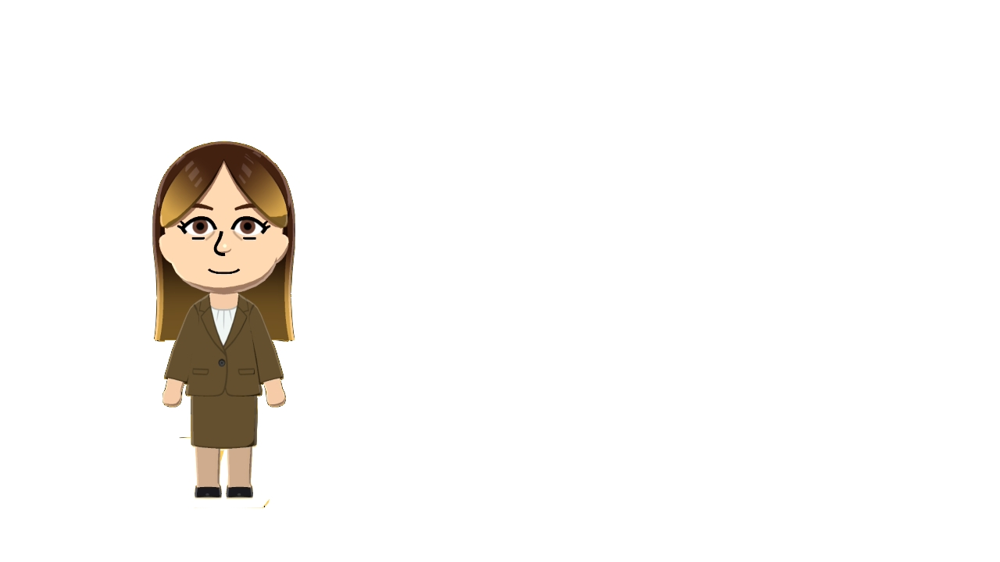

Let’s compare notes.
I’m based at Vanderbilt University in Nashville, exploring the space where engineering meets human health.
LET’S CONNECT
Interested in research, neurotechnology, scientific computing, or a collaboration? I’d love to hear what you’re working on.

I’m based at Vanderbilt University in Nashville, exploring the space where engineering meets human health.